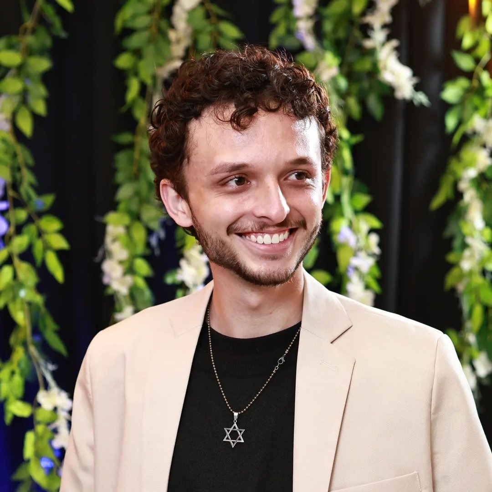

Mateus Luís Matos — Psicólogo
Atendimento presencial e remoto na região de São José - SC.
Pós-graduando em Psicanálise, Neuropsicologia e Psicopatologia Clínica.

Sou Mateus Luís Matos, psicólogo inscrito no Conselho Regional de Psicologia de Santa Catarina, sob o registro CRP 12/31722.
Meu trabalho é pautado na ética, no sigilo e no respeito à singularidade de cada sujeito, buscando oferecer um espaço seguro e acolhedor para a elaboração de angústias, a compreensão de padrões emocionais e a promoção da saúde mental.
Acredito que o acolhimento e a possibilidade de expressão são fundamentais para a construção de um processo psicoterapêutico. Compreendo que cada indivíduo possui uma história única, marcada por vivências e experiências próprias. Por isso, ofereço uma escuta ativa, ética e livre de julgamentos, respeitando o tempo e as particularidades de cada pessoa.
Atualmente, sigo aprimorando minha formação profissional como pós-graduando nas áreas de Psicanálise, Neuropsicologia e Psicopatologia Clínica.
Abordagem que busca compreender os processos inconscientes de cada indivíduo, permitindo elaborar angústias e ressignificar experiências.
Compreensão integrada da relação entre o funcionamento cerebral, as funções cognitivas, o comportamento e as emoções.
Olhar técnico e cuidadoso para o sofrimento psíquico, auxiliando no diagnóstico diferencial e no acompanhamento terapêutico adequado.